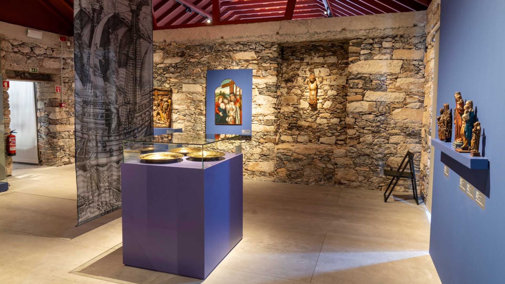

Atividades em Porto Santo

Praia do Porto Santo
A famosa praia de areia dourada com 9 km de extensão.

Museu Cristóvão Colombo
Conheça a história do navegador e a ligação da ilha à descoberta da Madeira.

Pico do Castelo
Suba ao ponto mais alto da ilha e admire a vista panorâmica do arquipélago.

Golfe do Porto Santo
Desfrute de um campo de golfe internacional com vistas para o mar.